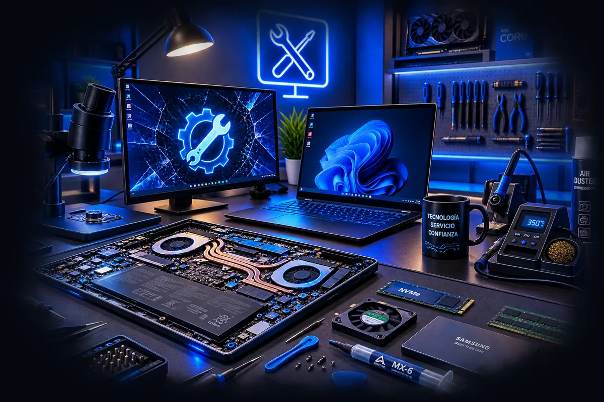

Servicios
Todo lo que hacemos con un computador
Reparación, mantenimiento y mejoras de equipos en Medellín y el Valle de Aburrá
Si su caso es que no enciende, que va lento o que se le regó líquido, cada uno tiene su propia página con más detalle. Aquí está el detalle de cada servicio y en cuánto se lo devolvemos. El valor lo cotizamos después del diagnóstico, cuando ya sabemos qué tiene su equipo: preferimos eso a darle una cifra al aire que después no se sostenga.

Grupo 01
Diagnóstico y reparación
Cuando el equipo falla y no se sabe por qué. Aquí empieza todo.
| Servicio | Tiempo |
|---|---|
| Diagnóstico completoPruebas de energía, memoria, disco y temperatura. Se descuenta si autoriza la reparación. | 24 horas |
| Revisión de energíaEl equipo no enciende: fuente, botón, cargador o conector de carga. | 1 – 3 días |
| Reparación a nivel de placaSoldadura de componente, pistas rotas, cortos y chips de carga. | 2 – 5 días |
| Limpieza de placa por líquidoLavado y evaluación tras derrame. Entre más rápido, mejor pronóstico. | 2 – 4 días |
| Cambio de pantalla de portátilPanel nuevo, calibrado y probado. El valor depende del modelo. | 1 – 3 días |
| Cambio de teclado o bisagrasRepuesto original o compatible, según disponibilidad. | 1 – 3 días |
Grupo 02
Mantenimiento
Lo que evita la reparación cara. Recomendado una vez al año, o cada seis meses si el equipo vive en ambiente con polvo.
| Servicio | Tiempo |
|---|---|
| Mantenimiento preventivoLimpieza interna, cambio de pasta térmica y prueba de temperaturas bajo carga. | 4 – 8 horas |
| Mantenimiento de escritorioIncluye limpieza de fuente, ventiladores y organización de cableado. | 4 – 8 horas |
| Formateo e instalaciónWindows con licencia, controladores al día y sus programas de siempre. | Mismo día |
| Limpieza de virus y publicidadSe quita lo que sobra sin borrarle los archivos. | Mismo día |
Grupo 03
Mejoras
Antes de comprar un equipo nuevo, pregunte. Muchas veces una sola pieza le devuelve dos o tres años de vida útil.
| Servicio | Tiempo |
|---|---|
| Migración a disco SSDWindows y programas pasan tal como están. Usted no pierde nada. | Mismo día |
| Ampliación de memoria RAMVerificamos qué soporta su equipo antes de venderle el módulo. | Mismo día |
| Instalación de tarjeta gráficaMontaje, prueba de temperaturas y revisión de que la fuente aguante. | Mismo día |
| Cambio de refrigeraciónLíquida o por aire, con prueba de temperaturas antes y después. | 1 día |
Grupo 04
Datos y seguridad
| Servicio | Tiempo |
|---|---|
| Recuperación de datosFormateo accidental, borrado por error o disco que no monta. | 2 – 5 días |
| Copia de seguridadRespaldo de sus archivos a disco externo o a la nube. | Mismo día |
| Configuración de respaldo automáticoSe deja andando solo, para que no dependa de acordarse. | Mismo día |

Grupo 05
Soporte remoto
Lo que no es de piezas se arregla sin mover el equipo: programas, virus, correo, impresoras, redes y configuración. Atendemos en remoto a toda Colombia, y si la sesión no resuelve el problema, no se cobra.
- Revisión remota, para saber si su caso se arregla así
- Sesión de soporte remoto de una hora
- Limpieza de virus y publicidad
- Correo, impresoras y red

Grupo 06
Soporte para empresas
Si tiene entre 5 y 50 equipos, le sale más barato un plan mensual que llamar cuando algo se dañe. Cubrimos mantenimiento programado, atención prioritaria y control del inventario de equipos.
- Mantenimiento programado de todo el parque de equipos
- Atención prioritaria y equipo de reemplazo mientras se repara
- Respaldo centralizado y antivirus administrado
- Informe mensual del estado de cada máquina

90
Días de garantía
Sobre la mano de obra, por escrito en la orden de servicio.
0
Cobros sin avisar
Ningún repuesto se cambia sin que usted lo apruebe antes.
24 h
Para el diagnóstico
Le contamos qué encontramos dentro del primer día hábil.
Los tiempos son los que manejamos en condiciones normales; si un repuesto se demora, se lo avisamos antes. La cotización que le enviamos trae marca, modelo y garantía de cada pieza, y no se cambia nada sin que usted lo apruebe.

¿No ve su caso en la lista?
Casi nunca dos equipos fallan igual. Escríbanos qué le pasa al suyo y le decimos si tiene arreglo y cuánto vale.